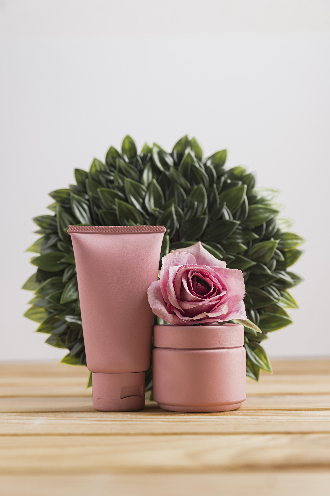

Be happy with what you have While working for what you want
Quoi de neuf ?
Spotlight sur cette dermathologue entrepreneur qui j’ai découvert en regardant ses
vidéos sur youtube, en effet dr Idriss est passionée par son métier et donc elle a fait
une ligne de soin cosmétiques qui répondent aux larges demandes de ces adaptent
de beauté.
Cleanance Comedomed

Concentré anti-imperfections réduit les imperpefctions réduit l'excès de sébum - resserre les pores
CLEANANCE COMEDOMED Concentré anti-imperfections
Anti-imperfections, Anti-récidive, Excellente tolérance
Point de vente / Acheter en ligne
Routine soin du visage
Pour cette routine beauté on part sur une routine simplifié en effet je l'ai réduit a quatre étapes :
1 - Le démaquillage est important dans une routine objectif : éliminer le maquillage, les impurtés et les résidus de pollution. produits : huile démaquillante, eau micelaire ou lait démaquillant.
2 - Le nettoyage objectif : néttoyer la peau pour éliminer les impurtés, excés de sébum et résidus de produits démaquillant. produits : gel nettoyant, mousse nettoyante ou savon doux selon le type de peau. Astuce : choisissez un nettoyant adapté à votre type de peau.
3 - L'éxfoliation 2 à 3 fois par semaine objectif : éliminer les cellules mortes et favoriser le renouvellement cellulaire. produits : gommage physique avce des grains ou exfoliant chimique acides AHA, BHA. Astuce : ne pas exfolier trop souvent pour éviter l'irritation de peau.
4 - Hydratation le but est d'hydrater la peau et maintenir son élasticité. produits : une crème hydratante adapté a votre type de peau. Astuce : appliquer généreusement sur le visage et le cou.
Jour 1 : Arrivée à Madrid et découverte du centre-ville arrivée en matinée à l'aéroport de Madrid-Barajas. Après s'être installé à l'hôtel, direction le centre-ville pour une première immersion dans l'ambiance madrilène. Commencez par la Puerta del Sol, l'un des points névralgiques de Madrid, puis continuez vers la Plaza Mayor, une place meblématique entourée de bâtiments historiques. Pour le déjeuner, goûtez aux spécialités locales dans les nombreux restaurants de la place.
Jour 2: Culture et Histoire le deuxième jour est consacré à l'art et à l'histoire. Visitez le musée Pardo, qui abrite des oeuvres de maîtres espagnols tels que Velàzquez et Goya. Ensuite direction le musée Reina Sofia pour admirer l'emblèmatique "Guenica" de Picasso. Prenez une pause déjeuner au marché San Miguel, un paradis gastronomique. L'après-midi, explorez le Plais Royale et ses magnifiques jardins.
Jour 3 : Exploration des quartiers et shopping pour une touche plus locale, explorez les quartiers pittoresques de Madrid. Commencez par le quartier de Malasana, connu pour sin ambiance bohème et ses boutiques vintage, en fin de journée, faites une promenade dans le parc du Retiro, un havre de paix en plein centre-ville.
Jour 4 : Gastronomie et spectacle pour le dernier jour, plongez dans la gastronomie madrilène. Faites un tour dans le quartier de la Latina et déjeunez dans un des nombreux bars à tapas. L'après-midi, visitez le temple de Debod, un ancien temple égyptien offert à l'Espagne, pour une vue imprenable sur la ville. Terminez votre séjour en beauté en assistant à un spectacle de flamenco dans l'un des nombreaux tablaos de la ville.
Conculusion Madrid est une ville qui combine richement histoire, culture, et modernité. Ce séjour de quatre jours vous permettra de découvrir les multiples facettes de cette capitale animée, de déguster des plats délicieux, et de vous immerger dans l'art et la culture espagnols Hasta luego, Madrid
Bienvenue sur mon blog ! Je m'appelle Ahlem, passionnée de découvertes et de petits plaisirs du quotidien. Ici, vous trouverez un mélange de conseils pratiques, d'inspirations de voyage, de recettes gourmandes et de réflexions sur la vie. Mon objectif est de créer un espace où chacun peut trouver une dose de positivité et d'inspiration. Que vous soyez à la recherche d'astuces pour améliorer votre quotidien ou simplement en quête de nouvelles idées, j'espère que ce blog deviendra votre refuge virtuel. Merci de rejoindre cette aventure et de faire partie de cette belle communauté !